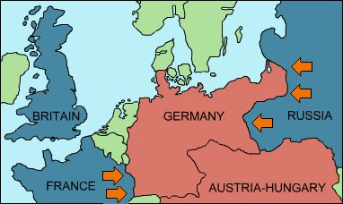

The Schlieffen Plan: Germany feared that Russia and France would make an alliance and attack them from both sides.

The plan, created in 1905, was for Germany to go through Belgium to attack France, and loop back around to attack
Russia before the Russian milita was mobilized. Belgium was neutral, and had a treaty with Britain which ensured that
if Belgium was attacked, British would come to their aid. When Germanys troops crossed into Belgium, the British and
Belgians responded. Russia's troops were already mobilized, both France and Russia were angered at Germany and WWI
effectively started.